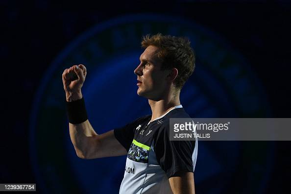

My name is Himanshu Rautela, and I am a student at IIIT Kota. I have always been very passionate about badminton, and it has been a significant part of my life. The sport has not only provided me with physical fitness but also taught me valuable life lessons. One day, while discussing our mutual love for badminton, a friend and I came up with the idea of creating a tutorials website dedicated to this wonderful sport. We wanted to share our knowledge and experiences with fellow badminton enthusiasts, aspiring players, and anyone who wants to learn more about the game The main aim of this website is to provide comprehensive and accessible tutorials, tips, and resources for players of all skill levels. Whether you're a beginner just starting to explore the game or an experienced player looking to refine your skills, our tutorials cover a wide range of topics to help you improve Through this website, we hope to create a platform where badminton lovers can come together, learn from each other, and foster a sense of community. We believe that sharing knowledge and experiences can greatly enhance the learning process and inspire others to pursue their passion for badminton Our tutorials cover various aspects of badminton, including techniques, strategies, rules, equipment, and fitness tips. We strive to provide accurate and up-to-date information, ensuring that our readers have access to reliable resources to enhance their understanding of the game In addition to tutorials, we also feature articles, interviews, and stories about professional players, notable tournaments, and the history of badminton. We want to showcase the rich culture and heritage of this sport while celebrating its global appeal. We are committed to continuously improving and expanding our website's content. We value feedback from our readers and encourage them to reach out to us with any suggestions, questions, or requests for specific topics they would like us to cover Thank you for visiting our website, and we hope you find the tutorials and resources helpful in your badminton journey. Let's continue to explore, learn, and play this beautiful game together!
INDIA's BIGGEST STARS
India has witnessed a remarkable surge in badminton talent over the years, with several players making a significant impact on the international stage. These Indian badminton stars have not only brought glory to the nation but have also inspired a new generation of players and fans. Let's delve into the profiles of some of India's revolutionary badminton stars who have left an indelible mark on the sport. Prakash Padukone: Prakash Padukone is often hailed as the pioneer of Indian badminton. He rose to prominence in the 1970s and 1980s, becoming the first Indian to win the prestigious All England Open Badminton Championships in 1980. Padukone's graceful playing style and impeccable technique set new standards for Indian players. His success paved the way for future generations, establishing badminton as a serious sport in India. Pullela Gopichand: Pullela Gopichand is not only a revered player but also a highly respected coach. As a player, Gopichand won numerous national and international titles, including the All England Open Badminton Championships in 2001. After retiring, he founded the Gopichand Badminton Academy, which has nurtured several talented players, including Olympic medalists. Gopichand's dedication and vision have played a pivotal role in India's badminton resurgence. Saina Nehwal: Saina Nehwal is one of India's most celebrated badminton players. She burst onto the international scene in the late 2000s and achieved the world number one ranking in 2015. Nehwal's aggressive style of play, combined with her exceptional speed and stamina, has brought her numerous accolades, including a bronze medal at the 2012 London Olympics. Her achievements have inspired a generation of aspiring female badminton players in India. PV Sindhu: PV Sindhu is a trailblazer in Indian badminton and an icon of perseverance. She etched her name in history by winning the silver medal at the 2016 Rio Olympics, becoming the first Indian woman to achieve an Olympic silver in badminton. Sindhu's towering presence on the court, powerful smashes, and never-give-up attitude have made her a force to be reckoned with. Her consistent performances have further elevated the profile of Indian badminton globally. Kidambi Srikanth: Kidambi Srikanth's attacking style of play and explosive smashes have earned him a prominent place among India's top badminton players. He became the first Indian male player to reach the world number one ranking in 2018. Srikanth has clinched multiple Super Series titles and has been a consistent performer in major tournaments. His aggressive gameplay and ability to dominate opponents have won him accolades and fans worldwide. P.V. Sindhu and Saina Nehwal's Rivalry: The rivalry between PV Sindhu and Saina Nehwal has been instrumental in driving Indian badminton to new heights. Their fierce battles on the court have captivated fans and showcased the immense talent and competitiveness of Indian players. This healthy rivalry has pushed both players to strive for excellence and has significantly contributed to India's rise as a badminton powerhouse. These Indian badminton stars have not only achieved remarkable success individually but have also contributed to the growth of the sport in India. Their achievements have inspired a new generation of players to take up badminton and have led to increased support and investment in the sport. Their impact extends beyond the boundaries of the badminton court, as they have become role models and ambassadors for the sport, motivating countless aspiring players to pursue their dreams.
A BRIEF HISTORY OF BADMINTON

The history of badminton can be traced back thousands of years, with its roots originating in ancient civilizations. While the modern version of the sport we know today was formalized in the mid-19th century, badminton has evolved over time and gained worldwide popularity. Let's delve into the captivating history of this dynamic racket sport. The origins of badminton can be found in ancient games played in civilizations such as China, Greece, and India. In ancient China, a game called "ti jian zi" involved kicking a shuttlecock made of feathers and a cork base. In ancient Greece, a similar game called "battledore and shuttlecock" was played using small wooden paddles to hit a shuttlecock made of feathers. The modern version of badminton took shape in mid-19th century England. The sport was initially known as "Poona" or "Poonah" and was played by British soldiers stationed in India. The soldiers adapted the Indian game of "Poona" and brought it back to England, where it gained popularity among the upper-class society. The Duke of Beaufort introduced the game to his guests at Badminton House in Gloucestershire, England, which is where the name "badminton" originated. The sport quickly spread to various British colonies and other countries, as it was embraced by the British military and the nobility.

In 1877, the Bath Badminton Club was established, and it became instrumental in developing standardized rules for the game. The club's rules formed the basis of modern badminton, including the use of a net, boundaries, and scoring systems. The sport gained further recognition when the first official badminton competition, known as the All England Open Badminton Championships, was held in 1899. Initially, badminton was played using handmade wooden rackets with strings made of gut or animal intestines. However, the introduction of modern materials and technology transformed the sport. In the 1960s, the development of lightweight aluminum rackets with synthetic strings greatly enhanced player performance and revolutionized the game. Badminton made its debut as an exhibition sport at the Olympic Games in Munich in 1972. It took another two decades for the sport to be officially included in the Summer Olympics, with its debut as a full medal sport in Barcelona in 1992. Since then, badminton has become a highly anticipated and fiercely contested event in the Olympic Games. The international governing body for badminton, known as the Badminton World Federation (BWF), was formed in 1934 to regulate and promote the sport worldwide. The BWF organizes major tournaments, including the Thomas Cup (men's team championship) and the Uber Cup (women's team championship), which are among the most prestigious events in badminton. Over the years, badminton has witnessed tremendous growth in terms of popularity and participation.
WORLD RANKINGS
The Badminton World Federation (BWF) calculates world rankings to determine the standings of badminton players and pairs in international competitions. These rankings are essential for players, coaches, and fans alike, as they provide a measure of a player's or pair's performance and help determine their eligibility for various tournaments. The BWF world rankings are based on a points system that takes into account a player's or pair's results in different tournaments over a specific period. The primary factors considered in the rankings calculation are the level and significance of the tournament, the performance of the player or pair in those tournaments, and the time decay of points. To determine the level and significance of a tournament, the BWF has classified tournaments into several categories, ranging from the highest level, which includes the Olympic Games and the World Championships, to lower-level tournaments like the International Challenge and International Series events. The points awarded for each tournament depend on its category, with higher-level tournaments offering more points. The performance of players or pairs in these tournaments is evaluated based on their results, taking into account factors such as the round reached, the strength of opponents faced, and the final position achieved. Winning matches against higher-ranked opponents or reaching later stages of a tournament contributes more significantly to a player's or pair's ranking points. The BWF also considers the time decay of points, which means that points earned in previous tournaments gradually lose their value over time. This encourages players and pairs to continue participating in tournaments to maintain or improve their rankings. The BWF world rankings are updated on a weekly basis, providing an up-to-date snapshot of the performance and standing of players and pairs in international badminton. These rankings serve as a reference for tournament organizers when inviting players or pairs, as higher-ranked individuals or teams often receive direct entry or seeding privileges in events. It is important to note that the BWF world rankings are dynamic and can change significantly based on the results of recent tournaments. Players and pairs have the opportunity to improve their rankings by consistently performing well in tournaments, while those who experience a decline in their performance may see a drop in their rankings. In conclusion, the BWF world rankings are calculated using a points system that considers the level and significance of tournaments, the performance of players or pairs in those tournaments, and the time decay of points. These rankings play a crucial role in determining the eligibility and seeding of players and pairs in international badminton competitions, and they provide a valuable measure of their performance on the global stage.